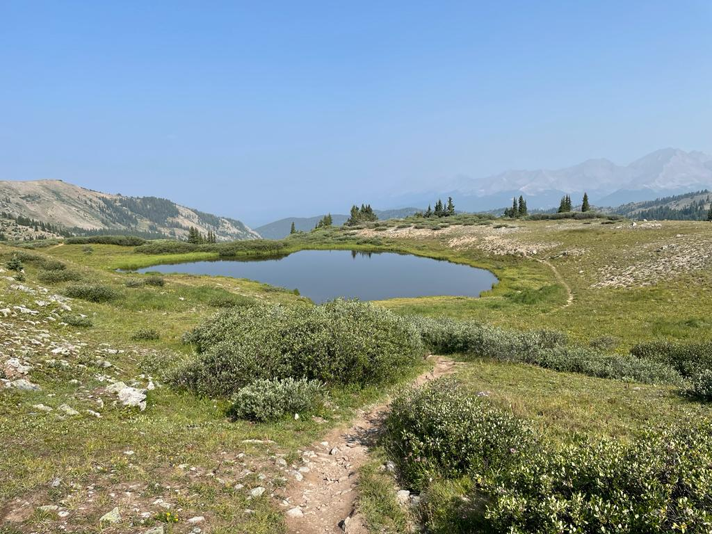
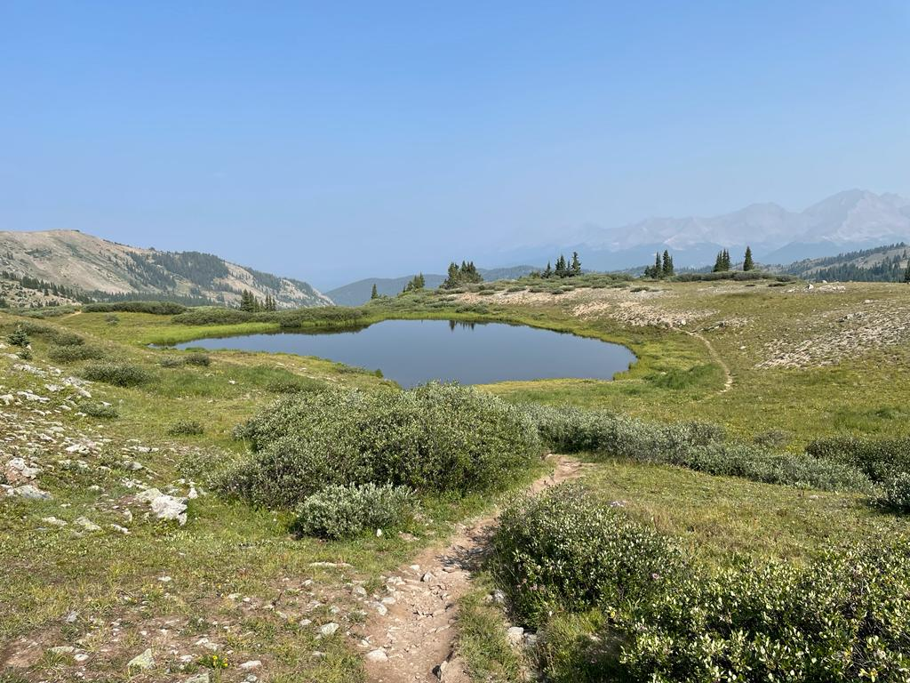
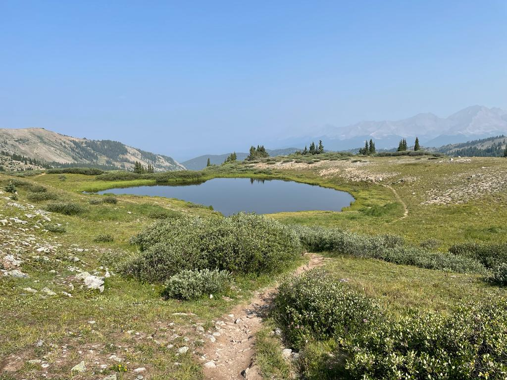
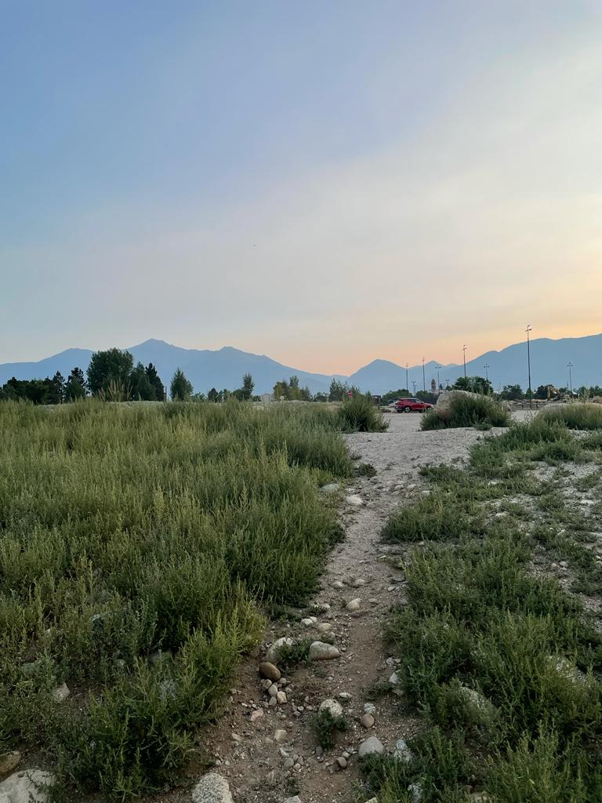

MOST RECENT HIKING TRIP..
- Hiking The Cottonwood Pass,Continental Divide - Colorado
 

Cottonwood Pass rises to the west out of Buena Vista,
heading over the Continental Divide. It’s an amazing mountain pass to see colorful fall aspen groves.
It connects with Almont near Crested Butte, making it an excellent summer trip.
The road closes in winter due to heavy snowfall, usually sometime in October.
The paved pass reaches 12,126 feet. Originally, just the Buena Vista half of the pass was paved,
but in 2017 the Almont side was paved as well. It’s an excellent drive for 2WD cars.


Cottonwood Pass rises to the west out of Buena Vista, heading over the Continental Divide. It’s an amazing mountain pass to see colorful fall aspen groves. It connects with Almont near Crested Butte, making it an excellent summer trip. The road closes in winter due to heavy snowfall, usually sometime in October. The paved pass reaches 12,126 feet. Originally, just the Buena Vista half of the pass was paved, but in 2017 the Almont side was paved as well. It’s an excellent drive for 2WD cars.
GREAT NATIONAL SAND DUNES..Near Alamosa Colorado.

- SandBoarding For The First Time -


BUENA VISTA..
Stops included:
- Cottonwood Hot Springs Inn and Spa

- White Water Rafting
- Trying the Local Food Scenery at "THE HOUSE ROCK KITCHEN"

- And many more outdoor activities to choose from.

Stops included: